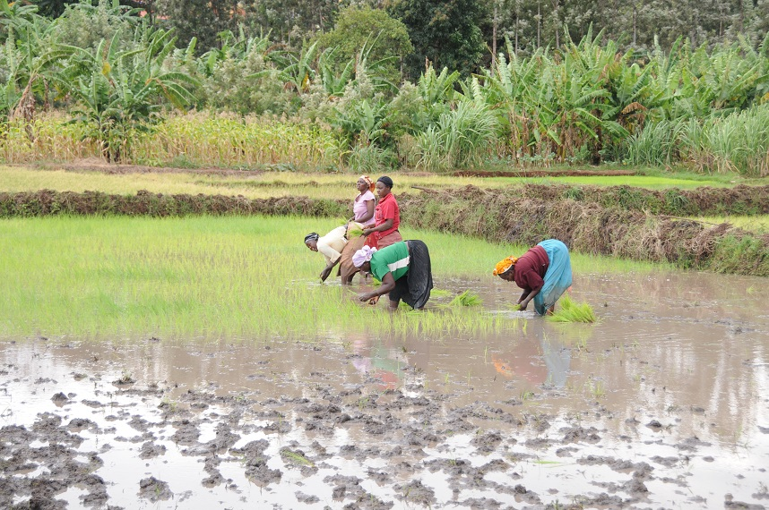

What's New
- 業績ページを更新しました。
- 京都大学に異動しました。
研究の概要

作物の生産性は、どのような遺伝子型の作物を、どのような環境で、どのように管理して栽培するかによって大きく変わります。これらを包括的に理解し、生産現場の問題点を抽出して解明することを目指しています。アジアやアフリカでの栽培を通じて、現場の課題の克服に取り組んでいます。
経歴
- 1997年3月
- 大阪府立大手前高等学校 普通科 卒業
- 2001年3月
- 京都大学理学部 卒業
- 2002・2003年
- 南京農業大学(中国) 研究生(各6〜10月・4〜10月、曹衛星教授のもとで研究)
- 2003年3月
- 京都大学大学院農学研究科修士課程 修了
- 2005年10月
- 京都大学大学院農学研究科博士後期課程 中退
- 2005年11月
- 京都大学大学院農学研究科附属農場 助手(〜2007年3月)
- 2007年4月
- 京都大学大学院農学研究科附属農場 助教(〜2016年3月)
- 2006年12月〜
2007年1月 - 国際熱帯農業研究所(IITA、ナイジェリア) 研修生
- 2008年3月
- 京都大学 博士(農学)
- 2013年4月
- 名古屋大学 農学国際教育協力研究センター 客員准教授(〜2014年3月、2018年5月〜2019年3月にも兼務)
- 2016年4月
- 東京農工大学大学院農学研究院 准教授(〜2024年3月)
- 2024年4月
- 京都大学大学院農学研究科 教授(現在に至る)
受賞
- 2013年3月
- 第17回日本作物学会研究奨励賞
- 2016年3月
- 第13回日本作物学会論文賞
- 2018年3月
- 第15回日本作物学会論文賞
- 2026年3月
- 第23回日本作物学会論文賞
連絡先
京都大学大学院農学研究科 作物学研究室
〒606-8502 京都市左京区北白川追分町
Email: katsura.keisuke.2a＠kyoto-u.ac.jp
※ スパム防止のため「@」を全角にしています。半角の「@」に置き換えてご連絡ください。